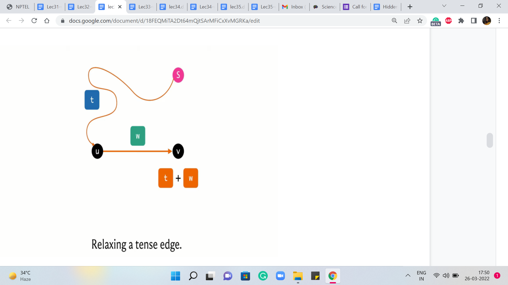
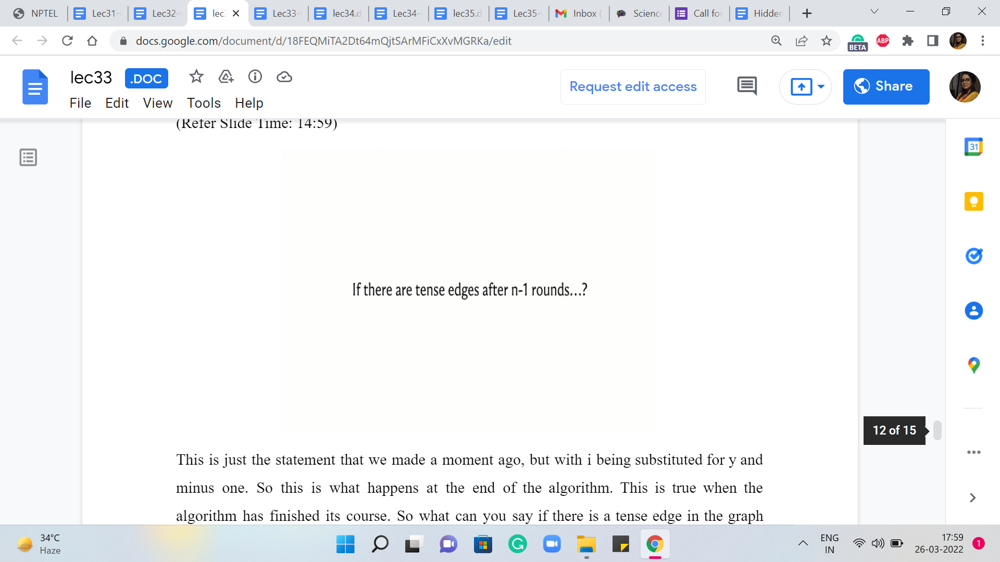
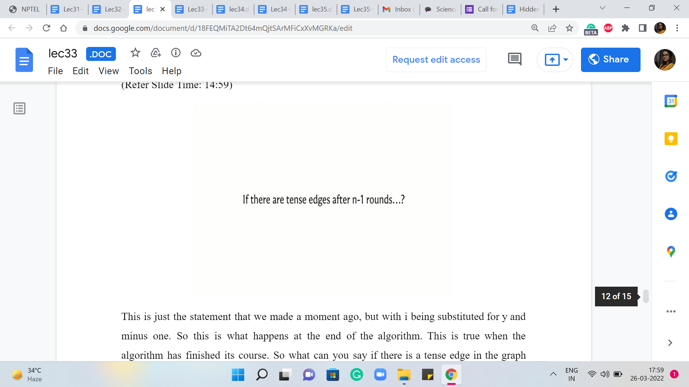

Shortest Paths - Module 2 (Wormholes [Bellman-Ford | Negative
Lecture - 33
Shortest Paths - Module 2 (Wormholes [Bellman-Ford | Negative Cycles])
Welcome back to the second module of week six and Getting Started with Competitive Programming. So, in this module, I want to focus on the single-source shortest path problem, even in the presence of negative cycles. So we are going to be learning about an algorithm that is popularly known as the Bellman-Ford algorithm.
And we are going to implement this in the context of a problem called ‘wormholes,’ which is available from the UVa platform. So this module is in two segments. In the first one, we will talk about the general algorithmic approach and in the second segment, we will introduce the problem statement for wormholes and also work through its implementation.
(Refer Slide Time: 00:59)


Okay, so just to recap what we have seen so far – We have broadly identified four different scenarios based on the nature of the weights on the edges. So the first one which is the simplest is when there are no weights at all or you could think of this as all the weights being uniform or set to one. And the slightly more general case is when we have non-negative edge weights.
And then we have a situation where we allow for negative edge weights but we do not have negative cycles, and the final situation is when anything goes and you could also have negative cycles. Now in terms of what we have seen about what we can do for these scenarios, we did say that breadth-first search traversal which you saw last week already is a nice linear time algorithm for the first case and is the preferred approach when you do have a situation without edge weights.
Now when you do not have negative edge weights, then you could use Dijkstra’s algorithm even in its original form. And when you have negative edge weights but no negative cycles, then a small modification to Dijkstra’s algorithm works and makes it an accurate algorithm for the situation. But one thing to note is that that comes at the price of the algorithm being potentially more expensive, especially on instances that do have negative edge weights.
If you are looking at instances of the second category where there are no negative edge weights at all, then it does not matter which version you are working with, they have the same complexity. Okay, but we do know that even the modified version of Dijkstra’s algorithm will run into potentially an infinite loop if there is a negative weight cycle in the input graph.
So as we said, the focus of this module is to really address the issue of negative cycles, and why are negative cycles such a problem. Well, first of all, a fundamental issue is that even the very notion of shortest paths becomes ill-defined when you have a negative cycle in the graph. So let us take a look at an example.
(Refer Slide Time: 03:23)

So here is a graph, and you can see that there is a cycle on the vertices S, A, C, B, in that order, and the total weight of the cycle is easily seen to be negative. In particular, it is, I think, -37. Now let us say that we want to find the shortest path from A to D. A perfectly reasonable way of reaching D from A seems to be to go via vertex A. So let us see what that would look like. You go from S to A.
Then you go from A to C, and then the final leg of this journey is going to be from C to D. Now, this path has a total cost of 1 + 2 + 3, which is 6. But do you think you can do better? Pause the video here and try to figure this out for yourself. Is there a path whose cost is less than six? And remember, when we talk about paths, we are allowed to repeat vertices in our journey. That is not a problem.
So take a pause here and come back once you have had a chance to think about this whenever you are ready. Alright, so perhaps you were able to see that instead of taking this last hop from C to D, suppose we were to back up a little bit and we came back to the vertex C, and instead of going to D from here, let us say that we go to B instead. And from B we go to S, and then we go from S to A and A to C and then C to D.
If you were to do this then you would essentially end up with a path whose length is -37 + 3, which is, I think -34, which is certainly much cheaper than 6. And now the problem is that there is nothing that prevents you from doing this detour twice for instance, or doing it thrice, or doing it four times. In fact, you could do it as many times as you like and every time you will end up making your previous path even shorter.
So this could go on really forever and then you could ask yourself the question: What does it even mean to talk about the shortest path from S to D when you have this sort of a negative cycle detour on the way which can be taken as many times as you want to keep making the path shorter and shorter or cheaper and cheaper depending on how you want to think about it?
So now that we appreciate why negative cycles can be problematic in the context of shortest paths, in particular, we see that the presence of negative cycles can make the very notion of shortest paths ill-defined. Now we want to think about how do we tackle this kind of situation. So I think there are two natural workarounds.
The first is to, perhaps, even change the definition of the problem. One of the reasons we are able to do these infinitely many detours is because we are permitting ourselves to repeat vertices along our journey. We could say that this is intuitively wasteful and we could think about just trying to find the shortest path between S and T which happens to be a simple path, which is to say that we do not allow for vertices to repeat.
I think this is a very interesting variant, and there is a good reason why it is considered to be a much harder problem than most of the shortest path variants that we are going to see here. So this is something that I am going to leave as food for thought. This is not the variant that we are going to consider.
The more standard approach is to simply say that when we do have negative cycles then the notion of the shortest path is not well defined. So in this case we have no obligation to report the shortest path. So we basically detect a negative cycle and produce that as a witness to why we could not find the shortest path, basically because the notion is not well defined.
So in this most general situation, our task essentially boils down to detecting the presence of a negative weight cycle if it exists, and if it does not then we just report the shortest paths as we have been doing so far.
(Refer Slide Time: 08:00)

So just going back to the summary for the moment so that we can add to this picture: What we are going to look at now is the Bellman-Ford algorithm, which has a running time that is either order ‘n’ cubed or order ‘n’ * ‘m,’ depending on whether we model the graph is adjacency matrices, or adjacency lists, respectively. And this will algorithm will turn out to do exactly what we want, which is to say that it can identify negative cycles when they are present and compute shortest paths and absent.
(Refer Slide Time: 08:38 & 08:56)


Now, just like Dijkstra’s algorithm, Bellman-Ford also works by relaxing tense edges, in some sense for as long as it can. And before we get to a more explicit description of what the Bellman-Ford algorithm does, let is just quickly recap the notion of a tense edge, and what it means to relax one.
So an edge from ‘u’ to ‘v’ with weight ‘w’ is said to be tense if the following inequality holds: ‘t’ + ‘w’ < ‘d,’ where t and d are our current understanding of the distances of the vertices u and v, respectively, from the source. So t can be thought of as the value of d of ‘v,’ if d is the distance array. And d can be thought of as the value of d[v], again, d being the same distance array.
(Refer Slide Time: 09:44 & 10:18)
 
So when this inequality holds, it is clear that we have discovered a better way of getting to v compared to whatever it is that we had in mind so far. So we are going to put that on the record by relaxing this edge, and what it means to relax this edge is to essentially get rid of the information that we had so far about v and replace it with this updated information about this new and better path from the source to the vertex v.
So the distance of v, the d array is going to reflect this new value, d + w. Now we have performed this kind of relaxation operation several times in the context of Dijkstra’s algorithm. Now let us take a look at how Bellman-Ford is going to perform these relaxations.
So it is really a very elegant and simple algorithm. So what we are going to do is initialize a distance array, as usual, and then what we are going to do is we are going to repeat the following process ‘n-1’ times, the process being: Just relax every tense edge. So you are going to basically go over every edge in the graph, and check if it is tense, and if it is, then you are just going to relax it. That is it.
That is pretty much the algorithm, except for one last step which I will come to in a moment, but you can probably already see where the running time is coming from. There is this outer loop that is going to run ‘n-1’ times, and the inner loop is going to run ‘m’ times because you are going to go through every edge to check if it is tense.
So just to understand what is happening let is think about what happens in the very first iteration of the outer loop. Now, at this point, you know that the distance array looks something like this. It is just a more visual representation of the first line of code that you see here or at least pseudocode. And basically what we have is that the distance of the source to itself is zero, and everything else is initialized to some very large number.
And at this point, we are going to go through all edges and ask them if they are tense. So which edges are going to be tense at this stage of the algorithm? Take a moment to think about this and come back when you have an answer.
Okay. So, hopefully, you have also concluded that at the very first stage, the only edges that are tense are the ones that are basically incident on ‘s.’ These edges are definitely tense because you have d[u] being zero, and the weight of u to v, in this case from the source to any other neighborhood of the source, is going to be some finite value. So this is going to definitely be better than this initial infinite value that we have in the array.
(Refer Slide Time: 12:18 & 13:16)


So, all of the edges that are incident on s are tense. So every vertex v that is a direct neighbor of ‘s’ has its distance values updated by the end of the first phase. Notice also that none of the other edges are going to be tense in the very beginning because if you consider any edge ‘u v,’ where neither u nor v is the source, then both of the distance values are going to be the same large number that is depicting infinity.
And therefore there is no reason for this image to be tense. So the picture at the end of the first round of Bellman-Ford actually looks pretty similar to what happens in the first round of Dijkstra, but we will see that things pan out a little bit differently as we go along. So in particular, you might want to spend a little bit of time thinking about what happens at the end of the second round, what happens to the end of the third round, and more generally, what happens at the end of ‘i’ iterations of the outer ‘for’ loop in the Bellman-Ford algorithm.
So here is a claim that I am going to make once again without proof, and as always, there are links in the description where you can find out more about why this is true, or you can try to prove it yourself using something like induction. So the claim is the following.
At the end of ‘i’th round, if there is a vertex v that is reachable from vertex s by a sequence of atmost ’i’ edges, then the value in the distance array for the vertex v is going to reflect the cost of the shortest path sequence on atmost ‘i’ edges. So, among all paths that have length atmost ‘i,’ the value in the distance array is going to be the cost of the cheapest such path or the shortest such path.
(Refer Slide Time: 14:25 & 14:59)
 

So, that is the claim, and that is what happens at the end of the ‘i’th round. So in particular, if I were to just think about ’i’ as being n-1, which is the other extreme, that is the last round. So what we want to say is that if v is reachable from s by a sequence of atmost ‘n-1’ edges, then d[v] reflects the cost of the cheapest such sequence.
This is just the statement that we made a moment ago, but with ‘i’ being substituted for by ‘n-1.’ So this is what happens at the end of the algorithm. This is true when the algorithm has finished its course. So what can you say if there is a tense edge in the graph after all the ‘n-1’ rounds of Bellman-Ford have run their course, and have completed their work? What can you say if there is a tense edge after all of this?
(Refer Slide Time: 15:31)


Please do think about this for a moment because the answer to this question holds a key insight with regards to this algorithm. So take a pause here and come back once you are ready. Alright, so I claim that if there is a tense edge after all the ‘n-1’ rounds are done, then they must in fact be in a negative weight cycle in the graph. And the reason for this, roughly speaking, is the following.
If you did not have negative weight cycles in the graph then all shortest paths would have, in fact, been simple paths. There would never be a reason to repeat a vertex because if you consider a path that repeats a vertex then you can look at the first time that you visit the vertex and the very next time that you visit the vertex.
So this subpath is going to be a cycle. And because there are no negative weight cycles, this cycle must have a weight of either zero or positive. Now, if you were to just completely avoid this detour then you obtain a path, which has fewer edges and the cost is either the same as before, which would happen if the cycle had zero weight or it is in fact better than before. So that tells you that in a graph that does not have negative weight cycles, essentially, all shortest paths are in fact simple paths.
And in particular, they will only involve at most ‘v-1’ edges. So, if your graph did not have any negative weight cycles then because of the claim that we made here at the end of ‘n-1’ rounds, we would have, in fact, correctly computed all the shortest paths already. And since all shortest paths have been computed, no remaining edge should be tense anymore because there is nothing to improve on.
Now, if you turn this around on its head, what this means is that if you still have a tense edge that is left after all of the ‘n-1’ rounds are done, then that implies that there must be a negative weight cycle. So that is essentially how Bellman-Ford works to detect negative weight cycles when they exist and to compute shortest paths correctly when they are not present.
So what we do is run ‘n-1’ iterations of this song and dance of identifying all tense edges. And when that is completed, we scan the set of all edges one more time. And in this last scrutiny, if any edge turns out to be tense, then we say: Okay, look, we have evidence that there is a negative weight cycle.
So, you could stop there, but if no edges are tense once you have finished the first ‘n minus iterations’ – if in this last scrutiny, all edges are perfectly happy, then we know that the distance array has correctly captured the costs of the shortest paths from the source to the respective vertices. And so, we are done as well.
Of course, the correctness of this hinges on a claim that we made about what happens in the ’i’th round. And once again, I should emphasize that this claim was made without proof. And if that is something you are interested in, you can certainly read up on the references that accompany the description of this video.
So this brings us to the end of the description of the mechanics of Bellman-Ford. It is a really elegant idea, and it is also fairly easy to implement. And we are now going to study the implementation in the context of a problem called ‘wormholes.’ And, this was a problem that is available from the UVA platform, and we are going to continue this discussion in the next segment. I will see you there!